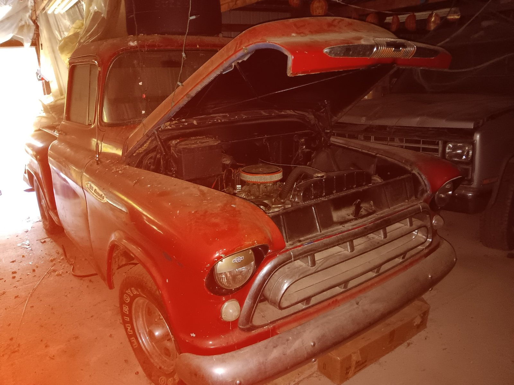
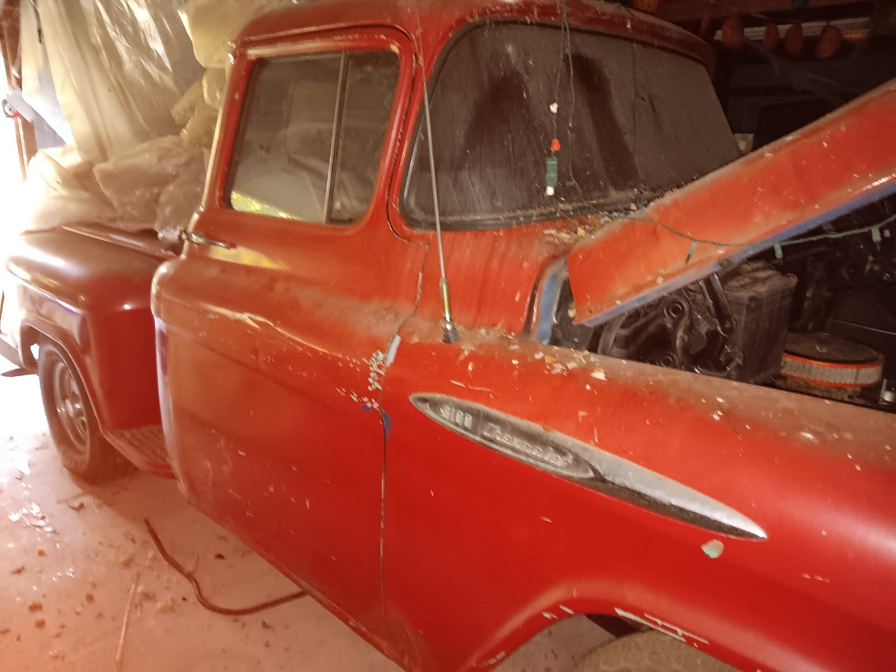
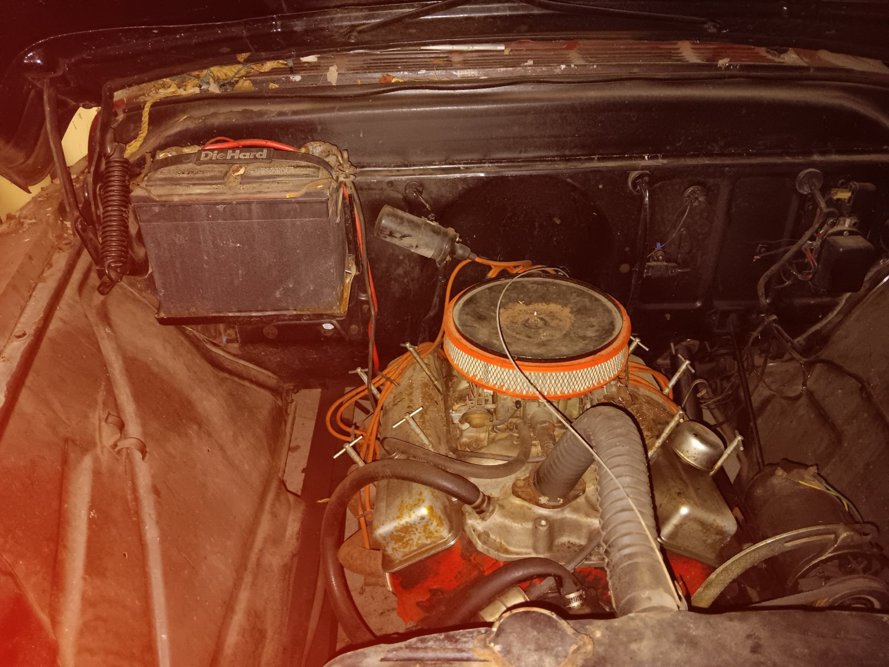
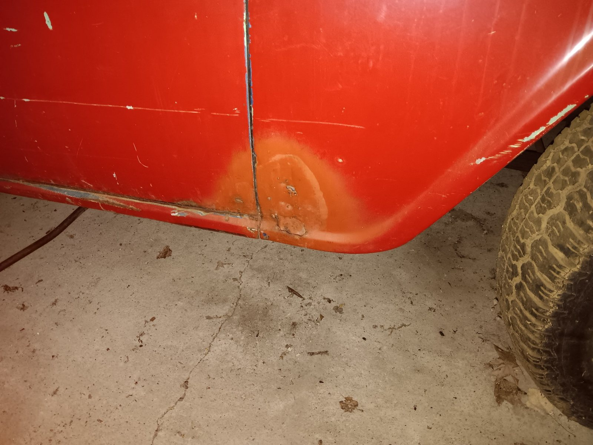
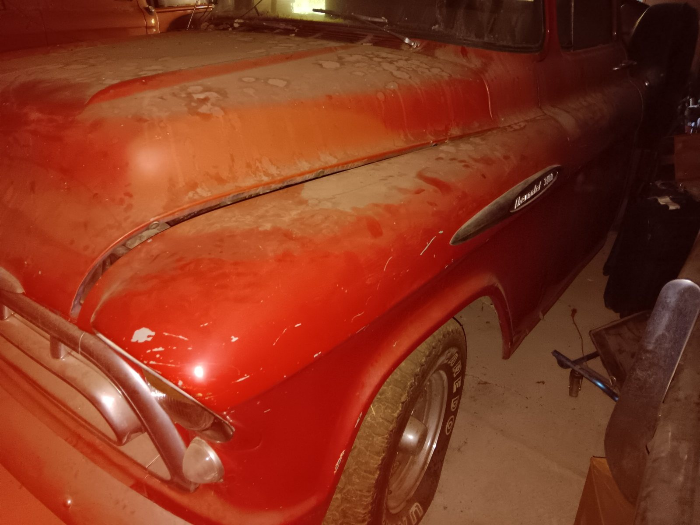
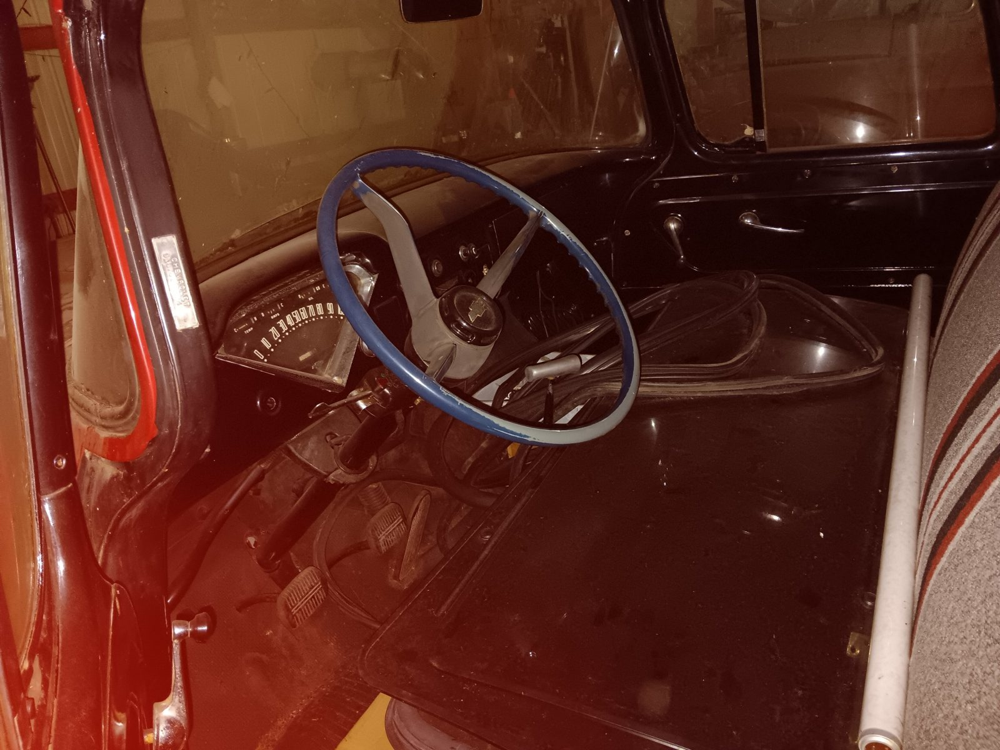

About This Truck
This Chevrolet pickup was reportedly driven from California to Ohio and then parked in a barn. It has been stored for an extended period. Its present engine, transmission, brake, and roadworthy condition have not been established.
Photos show a V8 engine, a largely intact cab and body, and visible wear, dust, paint deterioration, and lower-body rust/repair areas. The truck should be evaluated as a restoration project, not a verified running vehicle.
Buyer information: VIN, drivetrain specifications, completeness, and mechanical condition are pending verification. Offered as an uninspected project; no running or driving claims are made. Price to be determined.
Photo Gallery




